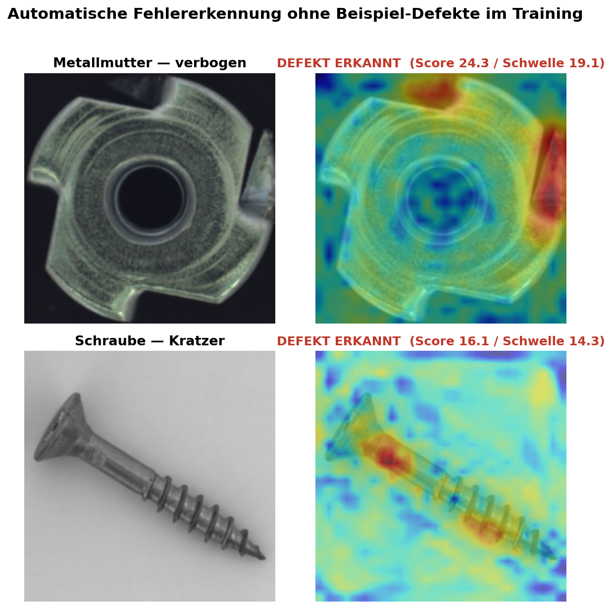

Ein KI-System, das lernt, wie ein fehlerfreies Bauteil aussieht, und jede Abweichung davon selbstständig als Anomalie markiert. Getestet an Metallmuttern und Schrauben — Bauteiltypen, wie sie in der Präzisionsfertigung millionenfach verbaut werden.

Das System bekommt ausschließlich Fotos von einwandfreien Bauteilen zu sehen — Fehlerbilder sind in der Praxis selten und teuer zu sammeln, hier braucht es keine.
Ein vortrainiertes Bilderkennungsmodell extrahiert charakteristische Merkmale aus tausenden Bildausschnitten und speichert sie als Referenz.
Bei einem neuen Bauteil-Foto vergleicht das System jeden Bildausschnitt mit der Referenz. Große Abweichung = Defekt, inklusive Heatmap, die zeigt wo genau.
Klassische Qualitätsprüfung mit KI braucht meist große Mengen an gelabelten Fehlerbildern — die in der Produktion oft schlicht nicht in ausreichender Zahl vorliegen, weil gute Fertigung selten Ausschuss produziert. Der hier verwendete Ansatz (PatchCore, veröffentlicht 2022) umgeht das: Er lernt ausschließlich aus Gutteilen und erreicht trotzdem Genauigkeiten auf Höhe des wissenschaftlichen State of the Art. Das macht ihn direkt einsetzbar für neue Bauteiltypen, ohne dass vorher erst Ausschuss gesammelt werden muss.
Nicht nur ein Notebook — ein lauffähiger Service:
Vollständiger Code, Architektur-Details und technische Doku im GitHub-Repository.
Code auf GitHub ansehen →